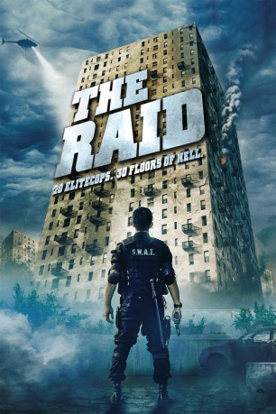

#329 The Raid 1
Alternativ: The Raid: Redemption (Englischer Titel)
 
 IMDB-Wertung: 7.6 / 10
IMDB-Wertung: 7.6 / 10  Metascore: 73
Metascore: 73 
In einem Appartementblock im Zentrum Jakartas wohnen der skrupellose Gangsterboss Tama Riyadi und seine Gang. Eines Tages wagt sich ein 20-köpfiges SWAT-Team unter der Leitung von Sergeant Jaka in das Gebäude. Doch die Polizisten werden entdeckt, die Ausgänge sind plötzlich verrammelt und der Strom abgestellt. Langsam kämpft sich das SWAT-Team die Stockwerke hoch. Während die Gruppe durch Bewohner und Gang immer mehr dezimiert wird, kommen sie dennoch näher an den Gangsterboss heran.
Jahr: 2011
Dauer: 101 Minuten
FSK: 18
Land: Indonesien Studio: Koch MediaTonspuren: DTS - ,
Untertitel:
Auflösung: 1080p (1920×1080) Größe: 6707 MB
Genre: Action, Thriller
Regisseur: Gareth Evans
Drehbuch: Gareth Evans
Soundtrack: Aria Prayogi, Mike Shinoda, Joseph Trapanese, Fajar Yuskemal
Darsteller:
 Iko Uwais als Rama
Iko Uwais als Rama- Joe Taslim als Jaka
 Yayan Ruhian als Mad Dog
Yayan Ruhian als Mad Dog- Pierre Gruno als Wahyu
- Ray Sahetapy als Tama
- Verdi Solaiman als Budi
- Alfridus Godfred als Machete Gang #1
- Very Tri Yulisman als Drug's Lab Guard #11
- Donny Alamsyah als Andi
- Tegar Satrya als Bowo
- Iang Darmawan als Gofar
- Eka 'Piranha' Rahmadia als Dagu
- Rully Santoso als Machete Gang #2
- Melkias Ronald Torobi als Machete Gang #3
- Johanes Tuname als Machete Gang #4
- Sofyan Alop als Machete Gang #5
- R. Iman Aji als Eko
- Ananda George als Ari
- Yusuf Opilus als Alee
- Mus Danang Danar Dono als Special Force Driver #1
- Sunarto als Special Force Driver #2
- Hanggi Maisya als Hanggi / Special Force #10
- Zaenal Arifin als Zaenal / Special Force #11
- Abraham Joshua B. Sitompul als Special Force #12
- Aji Setianto als Special Force #13
- Fachrudin Midun als Special Force #14
- Ardiansyah Putra als Special Force #15
- Engelius Rumbindi als Special Force #16
- Bastian Riffanie als Special Force #17
- Aliusman als Special Force #18
- Yandi 'Piranha' Sutsina als Prisoner
- Henky Solaiman als Rama's Father
- Fikha Effendi als Rama's Wife
- Ubay Dillah als Naga / Mad Dog's Man #1
- Taufik Arrahman als Mad Dog's Man #2
- Acip Sumardi als Mad Dog's Man #3
- Muhammad Yazid als Tomi / Andi's Man #1
- Saifan Nur als Angga / Andi's Man #2
- Umi Kulsum als Gofar's Wife
- Fiqih Hardana Yuanza als Spotter Boy #1
- Daffa Sikumbang als Spotter Boy #2
- Eka Aprilyana als Drug's Lab Guard #1
- Ali Nurkoto als Drug's Lab Guard #2
- Achmad Supriatno als Drug's Lab Guard #3
- Muhammadu Dikko Yusufu als Drug's Lab Guard #4
- Nur Wahyu Santosa als Drug's Lab Guard #5
- Dedy Djunaedi als Drug's Lab Guard #6
- Sutarno als Drug's Lab Guard #7 / Money
- Sahlianto als Drug's Lab Guard #8
- Tuhen als Drug's Lab Guard #9
Datei: X:\FSK18-Eastern-Collections\The Raid\Raid 1, The (2011, FSK18, 1920x1080).mkv seit 16.02.2015
Festplatte: FSK18
 Alle Filme aus Gruppe 'FSK18-Eastern-Collections\The Raid'
Alle Filme aus Gruppe 'FSK18-Eastern-Collections\The Raid'